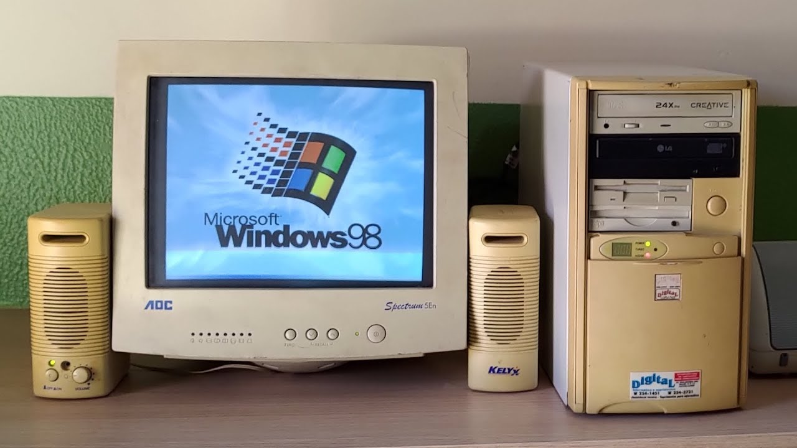
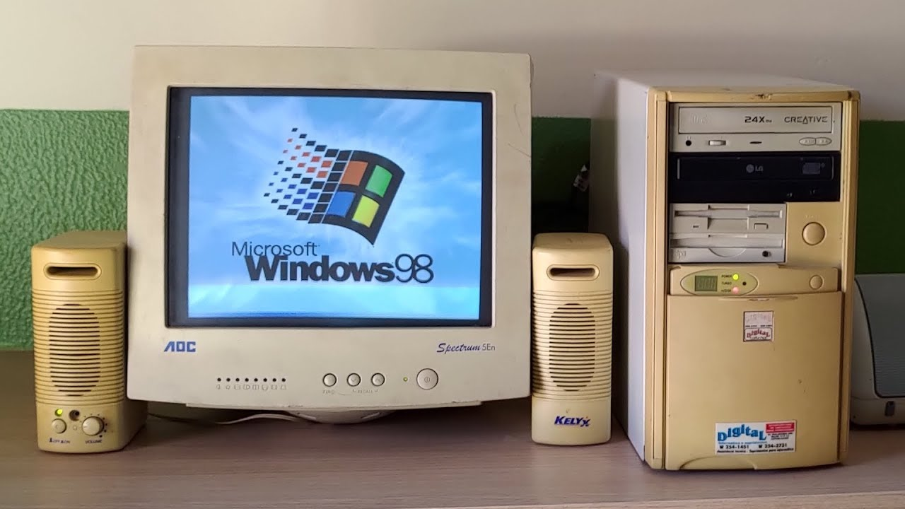

Welcome to my


>>>
Hi, I'm Carmela, born in '91. Grew up in Naples, southern Italy,
with a passion for crochet and a great support for my favorite
team.
I has always been an animal lover and this is why I appreciate
emotional expression and sensitivity, I give priority to empathy,
social harmony and cooperation.
Always ready to explore and experience something new. I am
pragmatic and down to earth, with a strong focus on what is
happening or is very likely to happen.
 

>>> My Windows '98 computer holds a special place in my memories, as it marked the beginning of my digital journey and taught me valuable problem-solving skills. Back in those days, owning a Windows '98 computer was an exciting experience for me. One of the most memorable aspects of my Windows '98 computer was its reliability—or sometimes, lack thereof. Computers of that era weren't as stable as modern ones, and they often encountered issues. But with each hiccup or glitch, I learned to tackle problems head-on. I quickly discovered that calling a technician could be costly, so I took matters into my own hands. Watching those technicians work became a valuable learning experience for me. I observed their every move, trying to grasp the intricacies of the machine. Over time, I became more confident and adept at solving issues myself. This newfound skill not only saved me money but also empowered me to navigate the digital world with greater ease.